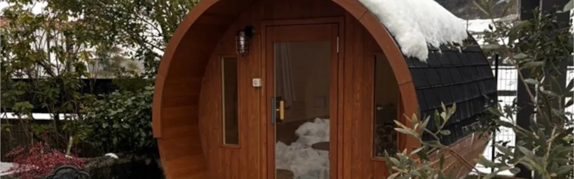

「自分でもやりたい」サウナ好き社長がこだわった、純国産ヒノキが香る極上のプライベート空間
宮崎県 / 施設・事業
元々サウナが好きで、温泉のサウナからプライベートサウナまで、さまざまな施設に通っていました。次第に「自分でもやりたいな」という思いが強くなったんです。 宮崎県で合同会社健美を経営す…
JOURNAL
Rinkの導入事例、ものづくりのこと、サウナを選ぶための読みものをお届けします。

NEWS & COLUMN
97ARTICLES
「Rink導入事例」は当社製品の導入先、「サウナ施設紹介」は他社製品も含む施設の紹介記事です。
宮崎県 / 施設・事業
元々サウナが好きで、温泉のサウナからプライベートサウナまで、さまざまな施設に通っていました。次第に「自分でもやりたいな」という思いが強くなったんです。 宮崎県で合同会社健美を経営す…

兵庫県 / 施設・事業
「90％、95％は稼働しているからね。サウナがある分、宿泊代も高く設定できています」 そう語ってくださったのは、貸別荘「Soothe Forest」を運営するM様です。 プライベー…

千葉県 / ご自宅・別荘
「前からプライベートサウナが欲しいと思っていて。まとまったお金が入ったタイミングで、思い切ってバレルサウナに決めました」 そう語ってくださったのは、千葉県のご自宅のお庭にバレルサウ…

佐賀県 / 施設・事業
海を望むロケーションに設置されたバレルサウナ 「サウナ良かったよ」「海が見えるサウナ良かったよ」と、お客様から嬉しいお声をいただいています。 そう語ってくださったのは、佐賀県の大政…

施設・事業
「ちょっとした遊び心がある施設になったのかなと。」 穏やかな口調でそう語るのは、瀬戸内海を一望するリゾートホテルのご担当者、鎌田様。 青い空と海に溶け込むように佇む、2台の国産ヒノ…

千葉県 / ご自宅・別荘
「本当。気持ちいいんですよ。」 柔らかな口調でそう語るのは、千葉県の別荘にバレルサウナを導入されたS様。 電気も水道も引かないオフグリッドの森で、国産ヒノキの香りに包まれ、薪ストー…

「施設の集客力を高めたい」「リラクゼーション設備を導入して他店と差別化したい」など、アウトドアサウナの導入を検討していませんか？商用（宿泊施設、キャンプ、グランピング、保養所など）…

「宿泊施設やキャンプ場にサウナを導入したい」「アウトドアサウナの導入で集客や顧客満足度を向上させたい」など、お悩みではありませんか？ こちらでは業務用アウトドアサウナの導入メリット…

「家庭で本格的なサウナを楽しみたい」「高品質な日本製の屋外家庭用サウナを探している」とお悩みではありませんか？こちらでは、日本製の屋外家庭用サウナの魅力を解説します。 国産ひのきが…

「自宅で本格的な家庭用サウナを楽しみたい」「屋外に設置できる2人用サウナを探している」「どのバレルサウナが最適なのか知りたい」など、このような悩みはありませんか？ こちらでは、家庭…

「屋外の家庭用サウナを導入したい」「維持費が高くつかないか不安」「安価なサウナを選んで後悔したくない」など、お悩みではありませんか？ こちらでは、屋外の家庭用サウナの一般的な価格帯…

「バレルサウナの耐用年数はどれくらい？」「長く使うためのメンテナンス方法が知りたい」など、お悩みではありませんか？バレルサウナはリラックス効果が高く人気ですが、適切なメンテナンスを…
キーワードを短くするか、分類・エリアを変更してお試しください。
Rink SAUNA ご相談窓口
設置場所や使い方から、一緒に考えます。